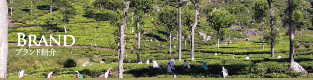

シティーホテルのティーラウンジやカフェチェーン、また紅茶専門喫茶店様に取り扱いやすい「業務用」パックで品揃え。
このほかに、ティーバック加工用や紅茶飲料の原料茶も数多くの品揃えをいたしています。
| セイロン ディンブラ | スリランカ中央山岳地帯の西側斜面にある高地茶園地帯、ディンブラで生産される高級茶。澄んだ鮮紅色、香り味ともバランスがよくクセがなく、マイルドで芳醇なフレーバーが特長。グレードはBOP |
| セイロン ウバ | スリランカ南東部高地に位置するウバ地方は世界三大銘茶の産地の一つで「ウバフレーバー」と呼ばれる高い香りと美しい鮮紅色、ひきしまった渋みのバランスが最高です。グレードはBOP |
| ディンブラ | スリランカ南西部高地に位置するディンブラ地区はセイロンで最も有名な済んだ鮮紅色、香り、味ともバランスよく、くせがなくてマイルドで芳醇なフレーバーが特長。OPタイプの茶葉は高地産茶では希少です。 |
| ヌワラエリア | スリランカの中央山岳部の最高地(標高1800m)で栽培されるハイグロウン(高地産)茶です。水色は渋い黄緑茶のオレンジ色で緑茶近い渋みが特長。クオリティーシーズン(1～2月)に採れる茶は優雅な花のような香りが特長です see。グレードはBOP |
| キャンディ | スリランカ南部に位置する古都キャンディーを中心とした高地で栽培されるミディアムグロウン(中地産)茶です。明るくオレンジ系の赤身の水色で、渋みのない軽い味です。クリームダウンが少ないためアイスティーにも適しています。グレードはOP |
| ルフナ | スリランカ南部、ルフナ地区は標高700m以下の茶園地区で、ローグロウン(低地産)茶では珍しいストロングタイプの紅茶です。水色は濃い紅色で渋みが強くコクのある味わいです。ミルクで煮込むセイロン風ミルクティーが楽しめます。グレードはBOP |
| アールグレイ | セイロン茶のOPタイプの茶葉に地中海産の柑橘系「ベルガモット」の爽快な天然フレーバーを着香した人気の紅茶。鮮やかな紅色と爽快な香りはアイスティーに最適です。 |
| ダージリンスペシャル | 春摘み茶と夏摘み葉をブレンドした逸品。グレードは、FTGFOP。水色はオレンジ色に近い紅色で、優雅な芳香と適度な渋みが特長。 |
| ビンテージダージリン | 世界三大銘茶の一つ。ダージリン地区の高名な茶園の厳選された茶をブレンドした逸品。グレードはFTGFOP1で特徴ある高い芳香(紅茶のシャンペンと称される)と薄いオレンジの水色、心地よい渋みが特長。 |
| アッサムスペシャル | インド最大の茶産地アッサム茶は、水色は濃厚で鮮やかな紅色、爽快感ある芳香、重厚でコクのある口当たりが特長。ミルクティーに合います。グレードはGFBOP |
| ビンテージアッサム | アッサム茶の中でも著名な茶園から厳選された逸品をブレンド。アッサム茶特有の水色は鮮やかな紅色、爽快感ある甘い花のような香りで渋みは弱く口当たりの良さが特長。グレードはGFBOP |
| アッサムCTC | アッサムCTC製法茶のBOPグレードです。クセがなくコクのある味わい、濃い赤色の水色が特長。ストレート、ミルクティーには最適。 |
| ニルギリ | ニルギリ(青い山の意)は、インド南部タミルナドウのデカン高原に近い丘稜地帯にあり、丘稜地帯の両サイドで1～2月、7～8月に良質の紅茶を生産。セイロン紅茶に似たさわやかな香りと鮮やかな紅色、クセのない水色が特長。グレードはTFBOP |
| ケニヤCTC | ケニヤ産のCTC製法茶でBP1、マイルドな味、すっきりした渋みでセイロン茶の似た特長。ストレート・ミルク・レモンとどんなメニューでも合います |
| キーマン | 安徽省産。収穫期間は6月～9月と短くなかでもクォリティシーズンは8月で最良の品質茶が収穫されます。蘭の花のような香りと独特の｢スモーキーフレーバー｣で甘く飲みやすい味が特長 |